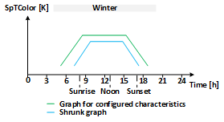
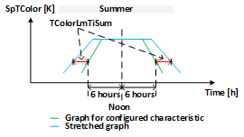
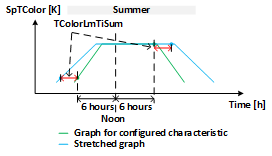
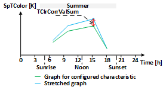
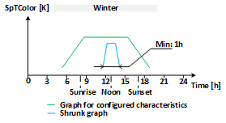

[HCL] Human-centric lighting (HCL)
HCL calculates the lighting setpoint color temperature and the brightness adjustment for the current day of year and time of the day based on configured time-of-day-specific basic characteristics.
Functioning
The function block Human-centric lighting (HCL) can approximate the natural lighting course over a day and year without instantiating schedulers. It aligns the artificial lighting to natural lighting.
The HCL function block calculates the lighting setpoint color temperature and the brightness adjustment for the current time of day based on configured time-of-day-specific basic characteristics. The time-of-day-specific basic characteristics are valid for March 20 (solar equinox). The length of day and the sun elevation for that day (March 20) are used as a reference to stretch or shrink the graph for time-of-day-specific basic characteristics both in time and magnitude.
The length of the current day is calculated and used in the HCL function block to stretch or shrink the graph for time-of-day-specific basic characteristics on the time axis. The maximum sun elevation above the horizon for the current day is used in the HCL function block to stretch or shrink the graph for time-of-day-specific basic characteristics on the value axis (magnitude).
If the length of the current day is longer than the length of day on March 20, then the graph for time-of-day-specific basic characteristics is stretched on the time axis, otherwise it is shrunk. When stretching or shrinking on the time axis, the actual local noon time of the day (highest solar elevation of the day) is used as a center point for stretching or shrinking. This means that the actual local noon time is not stretched or shrunk.
If the maximum sun elevation for the current day is higher than the sun elevation for March 20, then the graph for the time-of-day-specific basic characteristics is stretched on the value axis (magnitude), otherwise it is shrunk. When stretching or shrinking on the value axis, the minimal value in the graph for the time-of-day-specific basic characteristics is used as a starting point for stretching or shrinking. This means that the minimum value is not stretched or shrunk.
Stretching (shrinking) on the value axis and on the time axis is calculated independently from each other.
The HCL function block calculates the results once a minute.
The following graphs visualize the conceptual result (stretching and shrinking) of the independently performed value adjustment on the time and the value axis for a given time-of-day-specific basic characteristic for equinox (e.g. SpTColor as a function of time).
|
|  |


Configuration
The time-of-day-specific basic characteristics for lighting color temperature are configured at inputs [TColorVal] and [TColorTi]. The time-of-day-specific basic characteristics for lighting brightness adjustment are configured at inputs [BrgtVal] and [BrgtTi]. Inputs [TColorNumPt] and [BrgtNumPt] are used to define the number of points used in the characteristics (starting from the first point). The configuration 0 for the number of used characteristic points is interpreted as a disabled calculation for the respective characteristic.
The configurations for the time-of-day-specific basic characteristics are valid for March 20 (solar equinox).
Shrinking or stretching on the time axis
The length of the current day (sunrise to sunset) is used to stretch or shrink the characteristics on the time axis. The stretching or shrinking is based on the scaling factor formed by the ratio between the current length of the day and the length of day of March 20.
Inputs [TColorLmTiSum] and [BrgtLmTiSum] are used to limit the stretching.
Inputs [TColorLmTiWin] and [BrgtLmTiWin] are used to limit the shrinking.
The limits are applied to points in the configured time-of-day specific basic characteristics that are 6 hours away from the noon time. Values of points in the configured time-of-day specific basic characteristics that are 6 hours away from noon are not increased or decreased more than the configured limits. Thus, shrinking or stretching of the graph depends on the limits applied to the points that are 6 hours away.
The limits are applied to both the left and right sides of the characteristics: once on the left side, for points 6 hours before noon and once on the right side, for points 6 hours after noon.
The scaling factor is applied to all points in the graph. The values of the points are thus proportionally increased or decreased. Values of points in the configured characteristics that are more than 6 hours away from noon are increased or decreased more than the configured limits, so that these sections of the graph are stretched or shrunk more than the configured limits. Values of points that are less than 6 hours away from the noon time are increased or decreased less than the configured limits, so that these sections of the graph are stretched or shrunk less than the configured limits. If all points of the configured time-of-day specific base characteristic are less than 6 hours away from noon, the values of all points are increased or decreased less than the configured limit.
The configuration 0 for inputs [TColorLmTiSum], [BrgtLmTiSum], [TColorLmTiWin] and [BrgtLmTiWin] is used when stretching or shrinking on the time axis is not wished.
If the limits for stretching or shrinking on the time axis are not specified in the customer's requirements, the maximum limit of 1 day can be set for [TColorLmTiSum], [BrgtLmTiSum], [TColorLmTiWin] and [BrgtLmTiWin].
The following graphs visualize the conceptual result of the applied limits on the left and on the right side to the noon interval and the resulting stretched graphs for a given time-of-day-specific basic characteristic for equinox (e.g. SpTColor as functions of time with the limit from TColorLmTiSum).
 |  |
Shrinking or stretching on the value axis
The maximum sun elevation (at noon time) is used to stretch or shrink the time-of-day-specific basic characteristics on the value axis (magnitude).
In contrast to the time axis, no limitation is applied to the value axis. The value axis (magnitude) undergoes a correction.
Inputs [TClrCorrValSum] and [BrgtCorrValSum] define the stretching on the value axis: when the sun elevation is at its maximum position within the whole year, the time-of-day-specific basic characteristics are stretched so that the maximum value in the time-of-day-specific basic characteristics (this value may not be at noon time) will be raised by the configured value.
Inputs [TClrCorrValWin] and [BrgtCorrValWin] define the shrinking on the value axis: when the sun elevation is at its minimum position within the whole year, the time-of-day-specific basic characteristics are shrunk so that the maximum value in the time-of-day-specific basic characteristics (this value may not be at noon time) will be lowered by the configured value.
Configuration 0 for inputs [TClrCorrValSum], [BrgtCorrValSum], [TClrCorrValWin] and [BrgtCorrValWin] is used when stretching or shrinking on the value axis (magnitude) is not wanted.
The following graph visualizes the conceptual result of the applied corrections for the maximum values and the resulting stretched graph for a given time-of-day-specific basic characteristic for equinox (SpTColor as a function of time with the correction from TClrCorrValSum).
|  |

Geographical position
Length of day (sunrise to sunset), maximum sun elevation (at noon time) and actual local time are dependent on the Earth’s geographical position. The geographical position is configured at inputs [Latit] and [Lngit].
Positive values for [Latit] are considered as north latitude and negative values as south latitude.
Positive values for [Lngit] are considered as east longitude and negative values as west latitude.
Length of day (sunrise to sunset), maximum sun elevation (at noon time) and actual local time are also dependent on UTC offset and daylight-saving time state. The HCL function block reads the UTC offset and the daylight-saving time state from the device object of the automation station. These properties are set automatically based on the configured time zone for the automation stations.
The geographical position and the UTC offset must be consistent for the proper calculation of length of day, maximum sun elevation and actual local time.
The HCL function block gets the current local date and time from the internal clock of the automation station.
Configuration validation
Shrinking on the time axis is internally limited to 1 hour: when shrinking, the function block will leave at least 1 hour as time range for the graph for the time-of-day-specific basic characteristics and will not shrink it more although the configuration would allow it.

Before calculating the results, the HCL function block validates the user's configuration. If the validation does not pass, output [ErrSta] is set to 1 and outputs [SpTColor] and [BrgtAdj] are set to 0.
The following points are validated:
- At least one characteristic must be enabled ([TColorNumPt] or [BrgtNumPt] > 0).
- More than 1 point should be configured in the enabled characteristics.
- Enabled characteristics must have a minimum time range of 1 hour.
- The time difference between neighboring points on the graph must be 1 minute at the minimum.
In addition, output [ErrSta] will be set to 1 if the access to the device object was not successful.
Simulation
The HCL function block can simulate elapsing time with configured speed. Input [EnSim] enables the simulation of time in the HCL function block. Input [TiFacSim] defines the speed of the simulated time: the value 1.0 means that the speed of the simulated time is the same as the real time; the value 2.0 means that the speed of the simulated time is twice the speed of the real time.
Input [DaTiStts] defines the starting time of the simulation and input [DaTiStps] defines the stop time of the simulation. When the simulated time reaches the stop time, the simulation restarts from the beginning.
If [DaTiStps] is earlier than [DaTiStts], the HCL function block calculates the result only for the time at [DaTiStts].
Output [SimActv] indicates if the simulation is currently in progress.
Output [DaTi] displays the current simulated time. If the simulation is disabled, [DaTi] displays the current time of the automation station.
Leap years and daylight-saving time are not simulated by the HCL function block.
The simulation in the HCL function block uses daylight-saving time and UTC offset from the device object in the controller for the entire duration of the simulated period.
Color Value and Color Time
Values for TColorTi(1..20) and TColorVal(1..20) are unique to each location. To determine appropriate values, consult a reliable reference that provides solar elevation data for a given location (latitude and longitude) on a given date. The data should not include any adjustments for Daylight Savings Time. Get the data for March 20th of the current year. This is the only date for which data is needed.
Review the solar elevation data, making note of the time where the solar elevation changes from negative to positive in the morning (sunrise time) and from positive to negative in the evening (sunset time). Also note the time and elevation of each solar elevation entry that is a multiple of 10° elevation. If the solar elevation is not an exact multiple of 10°, choose the entry that is closest to a multiple of 10°, or interpolate between adjacent data points to approximate the time that produces an elevation that is closest to a multiple of 10°. Multiples of 10° provide enough data points to create a curve, while fitting into the twenty slots available in the HCL block.
If the location being considered has a maximum elevation that is slightly less than a multiple of 10° (example: maximum elevation 38°), find the elevation that is the maximum multiple of 5° and note the time and elevation of that entry. (Example: with a maximum elevation of 38°, note the time and elevation when the solar elevation reaches 35° degrees.) Be sure to note this time and elevation as the sun is rising and setting.
Enter a value of 3000 Kelvin into the TColorVal (Val1) parameter of the HCL block. Enter the sunrise time into the TColorTi (Ti1) parameter of the HCL block.
Times entered in Ti1, Ti2, etc. must be entered as hours and minutes (e.g. “13h_27m”).
Enter a value of 3500 Kelvin into the TColorVal (Val2) parameter of the HCL block. Enter the time when the solar elevation reaches 10 degrees into the TColorTi (Ti2) parameter of the HCL block.
For each solar elevation that is a multiple of 10, continue entering values into the TColorVal (x) parameters, where the TColorVal (x) = (solar elevation * 50) + 3000.
For each solar elevation that is a multiple of 10, continue entering times into the TColorTi (x) parameters, where the time corresponds to the solar elevation.
If a maximum solar elevation that was a multiple of 5 degrees was used, be sure to enter those color and time values in the correct time sequence with the other data.
After all values are entered for solar elevations, enter a value of 3000 Kelvin into the next TColorVal (Valx) parameter of the HCL block and enter the sunset time into the next TColorTi (Tix) parameter of the HCL block.
Review the data to ensure that all TColorTi (Tix) parameters are in ascending order, and all TColorVal (Valx) parameters are in pairs (for example, 0, 10, 20, 30, 35, 35, 30, 20, 10, 0). Unused value and time pairs in the HCL block can be left at a value / time of zero.
Determine the Number of Time-Value Pairs
The TColorNumPt parameter tells the HCL block how many value-time pairs to use in its calculations. After entering all value-time pairs, count all of the used pairs. Enter this quantity in the TColorNumPt parameter of the HCL block. A value of zero or an incorrect value will result in incorrect calculations.
Color Shift
The TClrCorrValxxx points control the color shift throughout the year from the reference data that was entered for March 20th. TClrCorrValSum shifts the color higher in the summertime, and TClrCorrValWin shifts the color lower in the wintertime, vs the reference values. These points control the summer and winter shift correctly, regardless of whether the location is in the northern or southern hemisphere. The following values will provide very good operation, with the color temperature output of the HCL block closely mimicking the color temperature outside.
For locations between 25° - 60° North or South:
TClrCorrValSum – 700 Kelvin
TClrCorrValWin – 1100 Kelvin
For locations between 15°-25° North or South:
TClrCorrValSum – 350 Kelvin TClrCorrValWin – 1200 Kelvin
For locations between 0°-15° North or South:
TClrCorrValSum – 0 Kelvin TClrCorrValWin – 1200 Kelvin
Time Shift
The TColorLmTixxx points control the time shift throughout the year from the reference data was entered for March 20th. TColorLmTiSum shifts the simulated sunrise time earlier and simulated sunset time later in the summertime, and TColorLmTiWin shifts the simulated sunrise time later and simulated sunset time earlier in the wintertime, vs the reference values. Note that these points control the summer and winter time shift correctly, regardless of whether the location is in the northern or southern hemisphere. The following values will provide very good operation, with the sunrise, sunset, and maximum elevation output of the HCL block closely mimicking the sun’s behavior outside.
For all locations:
TColorLmTiSum – 360 minutes
TColorLmTiWin– 360 minutes
Note: to enter these values in the HCL block parameters, enter the value as “360m”.
Values less than 15 minutes (at about 10° North or South), or less than 180 minutes (at about 60° North or South), or a linear interpolation between these values, can be used to artificially shorten the day in summer or lengthen the day in winter, but it is suggested that these points be left at their default values so the output of the HCL block corresponds to the actual color temperature outside.
Limit the Maximum Color Temperature
Office occupants generally do not like lighting color temperatures much in excess of 5000K. Depending on the configured location, the HCL block may output color temperatures in excess of 8000K. To prevent the color temperature of the building lighting from exceeding a particular value, the Maximum Value parameter of the BACnet object for the lighting color output can be set to the desired value (e.g. 5000K, 5500K, or the maximum value the fixture can support). If this limit is set, the color temperature of the building lighting will follow the curves from the HCL block from sunrise until the color temperature reaches the maximum value specified for the BACnet object for lighting color output. The color temperature of the building lighting will stay at this value while the value from the HCL block is greater than or equal to the maximum value specified for the BACnet object for lighting color output. Once the value from the HCL block is less than the maximum value specified for the BACnet object for lighting color output, the color temperature of the building lighting will again follow the curves from the HCL block.
Pins
Input | Description | Data type | Default value |
|---|---|---|---|
|
Latit | North latitude | Real | 47.17 [°] (Zug, Switzerland) |
|
Lngit | East longitude | Real | 8.52 [°] (Zug, Switzerland) -180...180.0 [°] |
|
BrgtCorrValSum | Brightness correction for value summer | Real | 0.0 [%] |
|
BrgtLmTiSum | Brightness limit for time summer | Time | 0 ms |
|
BrgtCorrValWin | Brightness correction for value winter | Real | 0.0 [%] |
|
BrgtLmTiWin | Brightness limit for time winter | Time | 0 ms |
|
BrgtNumPt | Number of brightness adjustment points | Integer | 0 |
|
BrgtVal | Brightness values | Structure | - |
BrgtVal | Value 1...Value 20 | Real | 0.0 [%] |
|
BrgtTi | Brightness times | Structure | - |
BrgtTi | Time 1...Time 20 | Time | 0 ms 0 ms...1 d |
|
TClrCorrValSum | Color temperature correction for value summer | Real | 0.0 [K] |
|
TColorLmTiSum | Color temperature limit for time summer | Time | 0 ms |
|
TClrCorrValWin | Color temperature correction for value winter | Real | 0.0 [K] |
|
TColorLmTiWin | Color temperature limit for time winter | Time | 0 ms |
|
TColorNumPt | Number of color temperature auxiliary points | Integer | 0 |
|
TColorVal | Color temperature values | Structure | - |
TColorVal | Value 1...Value 20 | Real | 0.0 [K] |
|
TColorTi | Color temperature times | Structure | - |
TColorTi | Time 1...Time 20 | Time | 0 ms 0 ms...1 d |
|
EnSim | Enable simulation | Boolean | 0 |
|
DaTiStts | Date and time for start simulation | DateAndTime | 1990-1-1-0:0:0.0 |
|
DaTiStps | Date and time for stop simulation | DateAndTime | 1991-1-1-0:0:0.0 |
|
TiFacSim | Time conversion factor simulation | Real | 1.0 1.0...10800.0 |
Output | Description | Data type | Default value |
|---|---|---|---|
|
BrgtAdj | Brightness adjustment | Real | 0.0 [%] |
|
SpTColor | Setpoint color temperature | Real | 0.0 [K] |
|
DaTi | Date and time of day | DateAndTime | 1990-1-1-0:0:0.0 |
|
SimActv | Simulation active | Boolean | 0 |
|
Sunrise | Sunrise If there is no sunrise, the output is set to -1s. | Time | 0 ms |
|
Sunset | Sunset If there is no sunset, the output is set to 1d. | Time | 0 ms |
|
ErrSta | Error state | Boolean | 0 |